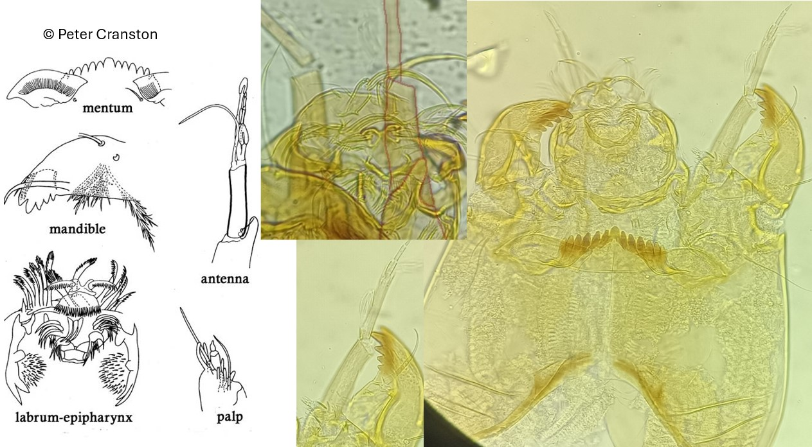

Stempellinella (Brundin, 1947)

Antennes
Socle antennaire portant une épine.
Mandibules
Dent dorsale pâle ; Dent apicale et 3 dents internes pointues brunâtres.
Mentum
Dent médiane arrondie et 6 paires de dents latérales jaunâtres/foncées dont la taille diminue régulièrement. Plaques ventromentales largement séparées médialement.
Labre
SI en forme de peigne, fusionnées à la base. SII plumeuses, situées sur un grand piédestal. Peigne de l’épipharynx composé de 3 plaques fines et triangulaires.
Prémandibules
Prémandibules avec 2-3 dents.
Ecologie
Le genre stempellinella est rencontré dans les sources et les petits cours d’eau mais également dans les lacs oligotrophes.
Espèces recensées en France
3 : S. brevis, S. minor, S. reissi.